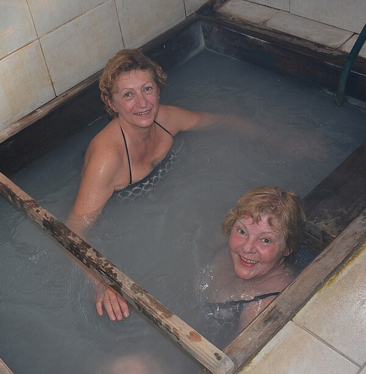
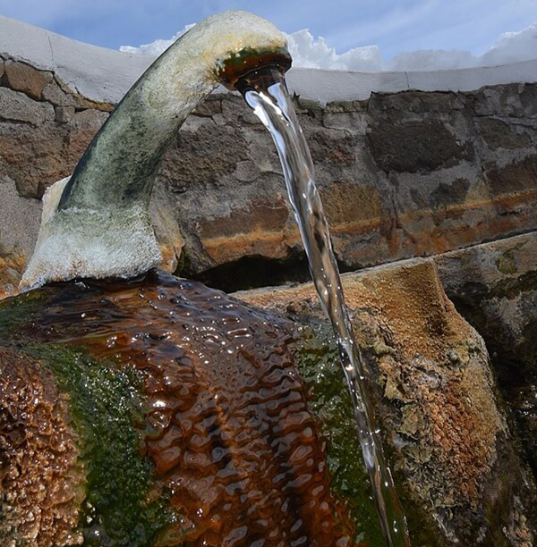

LAS TERMAS DE COPAHUE SON ÚNICAS EN EL MUNDO
En plena cordillera de los Andes, al noroeste de la provincia del Neuquén se encuentra este maravilloso centro turístico, casi a 2.000 metros sobre el nivel del mar, en cercanías al paso internacional argentino – chileno, al pie del Volcán Copahue, y a orillas de un gran espejo de agua formado por el Lago Caviahue.
Las termas del Copahue son las únicas termas en el mundo que reunen en un mismo lugar una innumerable cantidad de recursos minerales naturales como aguas, fangos, vapores y algas. Por ello cuenta con el aval de la Organización Mundial de la Salud.
Junto al Volcan Copahue, al pie de la cordillera de los Andes, hacen una combinación perfecta para que Copahue sea un paraíso termal.
El desarrollo de las termas tiene su origen en la historia del volcán Copahue, al que los antepasados indígenas de la región mapuche le adjudicaron riquezas y poderes para el espíritu.
Los tratamientos que se realizan están asesorados por profesionales del servicio médico del complejo termal, combinando las diversas aguas, vapores y fangos: balneoterapia (baños de inmersión o hidromasajes), fango terapia, masoterapia, kinesioterapia y gimnasia.
RECURSOS TERMALES
Vení a las termas del Copahue y conocé sus recursos mineromedicinales que te aportarán un beneficio directo en la salud.
En la Villa Termal de Copahue se utilizan 4 tipos recursos termales: los fangos, las algas, el vapor y las aguas mineromedicinales que se aplican en los distintos tratamientos terapéuticos.
TIPOS DE AGUAS TERMALES DE COPAHUE
AGUA DE VOLCÁN
Temperatura en condiciones normales: 69 °C
Clasificación: Hipertermal (45-100 °C)
Tipo de Agua: Sulfatada, clorurada, ferruginosa.
Mineralización: Fuerte
PH: 2,8
Origen:
Es un agua que proviene de una vertiente ubicada cerca del cráter del volcán Copahue.
¿Como se utiliza?
En los Baños de Copahue en bañeras para inmersión y en hidromasajes. En terapias hidropínicas para llevar adelante los tratamientos gástricos, diabéticos y de hipercolesterolemia, la forma de administración y dosis de esta agua debe ser indicada por el medico termal.
Objetivos terapéuticos:
Es un tipo de agua que ayuda a tratar problemas digestivos tales como estreñimiento, enteritis, dispepsias, a la vez que combate anemias ferropenias, enfermedades metabólicas como la hiperuricemia, el colesterol, insulino rresistencias. Y afecciones cutáneas como la micosis superficial o la dermatitis.
AGUA DE LIMÓN
Temperatura en condiciones normales: 53 °C
Clasificación: Hipertermal (45-100 °C)
Tipo de Agua: Sulfatada, ferruginosa.
Mineralización: Fuerte
PH: 3,9
Origen:
El agua de limón se extrae de un manantial ubicado justo en la bajada de ingreso a Villa Termal de Copahue. Es un agua bebible que tiene efectos laxativos, recomendamos que esta agua se beba en dosis recomendados por los médicos del complejo termal.
¿Como se utiliza?
Es un agua que se usa para curas de bebidas.
Objetivos terapéuticos:
Se utiliza para tratar afecciones digestivas ya que es un buen estimulante de la motilidad intestinal por su alto contenido en sulfatos.
Es utilizada en programas hidropónicos gracias a que mejora la digestión de los pacientes, trata la litiasis biliar, dispepsias, ayuda a problemas de estreñimiento. Además se pueden tratar anemias ferropenias y enfermedades metabólicas tales como la hiperuricemia, hipercolesterolemias, diabetes.
AGUA DEL MATE
Temperatura en condiciones normales: 60 °C
Clasificación: Hipertermal (45-100 °C)
Tipo de Agua: iones predominantes de bicarbonato, sodio, calcio, sulfato
Mineralización: Baja
PH: 7,2/li>
Origen:
Este manantial surge al finalizar el puente que cruza la sulfurosa y la laguna del chancho. Justamente frente al café El montañez.
¿Como se utiliza?
Es un agua que proviene de una vertiente natural, por su alta temperatura y su sabor agradable los turistas la utilizan para tomar mate. En el servicio de inhalaciones es utilizada para hacer nebulizaciones.
Objetivos terapéuticos:
es un agua que tienen poca mineralización pero que tiene una gran cantidad de minerales importantes para el cuerpo como lo es el calcio, sodio magnesio, y potasio. Por lo que está indicada para remineralizar al organismo solo se debe de tener cuidado con hipertensos porque tiene una cantidad considerable de sodio y personas con síndromes diarreicos porque tiene sulfatos.
Es utilizada para nebulizar, enfermedades respiratorias: rinitis, sinusitis, tos, rinofaringitis, asma y bronquitis. Fluidifica el moco en forma general y mejora la movilidad ciliar por lo que es especialmente indicada para deportistas, ex fumadores y fumadores.
AGUA VERDE
Se extrae de: laguna de agua verde
Temperatura en condiciones normales: 25 a 30 °C
Clasificación: Hipotermal (20-35 °C)/li>
Tipo de Agua: sulfatada, cálcica, sódica.
Mineralización: Fuerte
PH: 4,2
Origen:
Esta laguna se encuentra en el eje central del complejo termal de Copahue. El color verde de este recurso se debe a la presencia de algas termófilas microscópicas del tipo Chlorella Kessleri que se encuentran suspendidas en el agua y madurando dentro de la fuente natural.
¿Como se utiliza?
Se utiliza de forma inmersión en la propia laguna, también se realizan actividades de agua terapia dentro de la laguna, Se ingresa al complejo y se utiliza tanto en bañeras de inmersión, hidromasaje e hidropulsor. Es de destacar que en el servicio de dermatología se utiliza esta agua para los hidromasajes y en el circuito antiestres.
Objetivos terapéuticos:
Es un agua que se recomienda generalmente en enfermedades dermatológicas como acné, eczemas, psoriasis por su mineralización y las algas que tienen en suspensión es especialmente indicada para dermatosis. Por su mineralización rica en calcio, sodio y magnesio es especial para contracturas musculares y disminuir dolor.
AGUA FERRUGINOSA Y SULFUROSA DE INMERSIÓN (BAÑO 7 Y 8)
li>Temperatura en condiciones normales: 61 °C
Clasificación: Hipertermal (45-100 °C)
Tipo de Agua: Sulfurada, iones predominantes bicarbonato, sulfato, calcio, sodio y magnesio.
Mineralización: Muy Baja
PH: 6,5
Origen:
Estos manantiales surgen en los piletones naturales de los baños externos señalizados como baño 7 y 8, como nombres de fantasía el pileton de agua del Baño 7 es llamado sulfuroso y el del Baño 8 ferruginoso. Pero podemos ver por su clasificación que son aguas sulfuradas.
¿Como se utiliza?
Son piletones naturales que se llenan de forma natural por vertientes que surgientes en los mismos piletones, las personas ingresan durante 15 minutos se los controla la temperatura y se la regula agregando agua potable fría.
Objetivos terapéuticos:
Por su mineralización rica en calcio, sodio y magnesio es especial para contracturas musculares y disminuir dolor. Lo más importante de esta agua es que tiene el azufre en forma de Azufre reducido SH2 lo que permite que esta bio disponible para la absorción y actuar como un potente des-inflamatorio tanto en patologías de piel, reumatológicas y respiratorias.
Las técnicas de administración de aguas mineromedicinales: pueden ser en aplicación tópica, aplicación atmiatría o ihalatoria y cura hidropínicas.
AGUA DE LAGUNA DEL CHANCHO
Temperatura en condiciones normales: 35,4 °C
Clasificación: Hipotermal (20-35 °C)
Tipo de Agua: Sulfatada, Cálcica, Ferruginosa.
Mineralización: Fuerte
PH: 2,3
Origen:
Esta laguna se encuentra al final del eje central del complejo termal de Copahue, llama la atención porque tienen un color grisáceo, se observan personas disfrutando de su calor natural y embarrándose.
¿Como se utiliza?
Se utiliza de forma natural, la persona se puede embarrar con fango sustraído de la laguna madre que se deja en un cuenco al costado de la laguna. La persona debe dejarlo durante 5 – 8 minutos sobre la piel para permitir que se absorban minerales sin que el fango deshidrate la piel. Luego ingresa a la laguna durante 20 minutos.
Objetivos terapéuticos:
Es un agua que se recomienda generalmente en enfermedades dermatológicas en psoriasis por su mineralización alta en sulfato es un buen queratolitico y ayuda a la descamación. Por su mineralización rica en calcio, sodio y magnesio es especial para contracturas musculares y disminuir dolor. Al tener una alta cantidad de hierro es estimulante del metabolismo celular lo que permite acelerar la cicatrización y el fango de la laguna es rico en sulfuro potente desinflamante por lo que está indicado para patologías reumáticas.

Pileta de inmersión de agua ferruginosa

Vertiente natural de agua termal
AGUA SULFUROSA DE LA LAGUNA MADRE
Temperatura en condiciones normales: 54 °C
Clasificación: Hipertermal (45-100 °C)
Tipo de Agua: Sulfurada.
Mineralización: Fuerte
PH: 5,6
Origen:
Esta laguna se encuentra en el eje central del complejo termal de Copahue. Se evidencia por el vapor que emite.
¿Como se utiliza?
Se ingresa al complejo a través de cañerías y se utiliza tanto en bañeras de inmersión, e hidropulsor.
Objetivos terapéuticos:
Es un agua que se recomienda generalmente en enfermedades dermatológicas en psoriasis por su mineralización alta en sulfato es un buen queratolitico y ayuda a ala descamación. Por su mineralización rica en calcio, sodio y magnesio es especial para contracturas musculares y disminuir dolor.
AGUA DE COPAHUE O VICHY
Temperatura en condiciones normales: 41,8 °C
Clasificación: Hipertermal
Tipo de Agua: Ferruginosa iones predominantes bicarbonato y calcio.
Mineralización: Baja
PH: 7,4
Origen:
Este manantial surge en las inmediaciones de la laguna verde está señalizado correctamente.
¿Como se utiliza?
Esta agua solo se utiliza en forma de bebida se pueden beber unos 100 a 200 ml en ayunas o lejos de la comida. Siempre se debe consultar con un médico termalista.
Objetivos terapéuticos:
El Agua de Copahue (o Vichy) por su contenido en hierro se anemias ferropenias y su alto contenido en bicarbonato ayuda a enfermedades metabólicas como la hiperuricemia o la diabetes. Es un buen recurso para tratar síndromes acido sensitivos, gastritis crónica, dispepsias.
AGUA FERRUGINOSA
Temperatura en condiciones normales: 60 °C
Clasificación: Hipertermal (45-100 °C)
Tipo de Agua: bicarbonatada, carbogaseosa y radiactiva.
Mineralización: Baja
PH: 6
Origen:
Esta agua surge en un manantial ubicado en el exterior del baño 8 está señalizado con cartelería.
¿Como se utiliza?
Este manantial solo se utiliza para tratamiento como agua de bebida, se recomienda beber esta agua en ayunas unos 100ml a 200 ml. Es importante la consulta médica.
Objetivos terapéuticos:
Es un agua que permite mejorar las reservas de hierro, y para tratamiento de anemias ferropenicas. Tiene propiedades digestivas por tener bicarbonato.
AGUA SULFUROSA
Temperatura en condiciones normales: 51 °C
Clasificación: Hipertermal (45-100 °C)
Tipo de Agua: iones predominantes de bicarbonato, calcio, sodio y magnesio. GAS disuelto de SH2 :0,1
Mineralización: Baja
PH: 7,1
Origen:
este manantial surge en el exterior del baño 8 esta adelante del manatial de agua ferruginosa.
¿Como se utiliza?
La terapia más común para usar este tipo de agua son las inhalaciones a través de nebulizaciones y en forma de bebida. Se puede beber unos 200 ml diarios, siempre es importante que sea indicado por el médico.
Objetivos terapéuticos:
Entre las patologías más comunes que trata este tipo de agua son los problemas de digestión, gastritis, y enfermedades inflamatorias intestinales aunque la cantidad de sulfuro es muy pequeña ayuda como agente antiinflamatorio general del cuerpo. Enfermedades respiratorias: rinitis, sinusitis, tos, rinofaringitis, asma, bronquitis, fluidifica el moco en forma general y mejora la movilidad ciliar por lo que es especialmente indicada ´para deportistas, ex fumadores y fumadores.